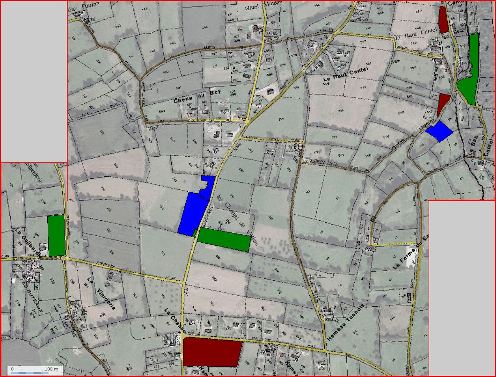
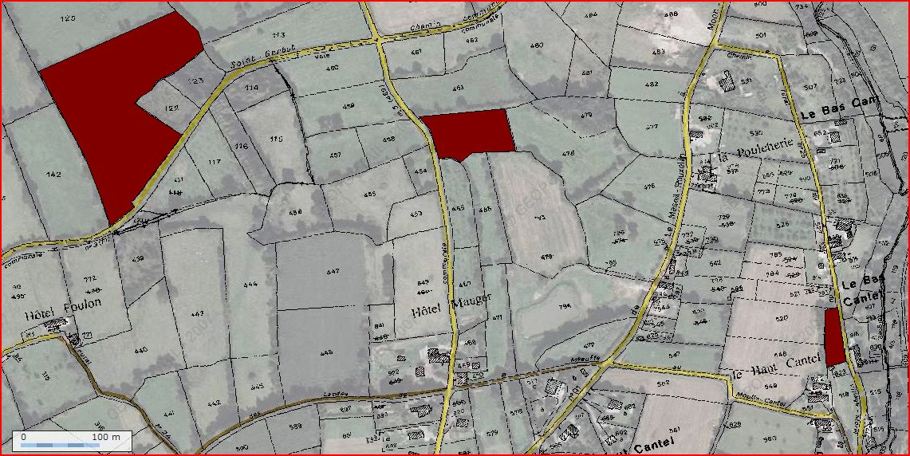

Partages de 1978 entre les frères Rauline
En 1978, la donation partage a lieu entre les trois frères et Mamie.
Les terres de Jean (en vert) sont :
- les Champs de Villiers, n°B 359, 360, 361 et les Mares n°668 (= jardin de Tonton Jean)
- le pré du Moulin, n°C 115
- le pré du Bois, n°C 116
- le pré du Moulin, n°C 335
- le
Jardin Germaine, n° B 666 (près de la Guilberderie). Ce
terrain était appelé Jardin Germain sur la matrice
cadastrale.
Les terres de Papa (en rouge) sont :
- la Cache au Rey et le Jardin de la Cache au Rey, n°B 371 et 372
- la Maison Busquet, n°B 519 et 555
Les terres de Jacques (en bleu) sont :
- la Vallette, n°B 339 et 340 (= chez Mamie)
- les Mares et Pièce de la Mare, n°B 667 et 338
- le Hameau Parey, n°B 57

Par la suite, Papa et Maman ont acheté deux autres terrains :
- en 1994, le petit champs aux peupliers, appelé la Pouletterie
- en 1996, le grand champ aux peupliers, appelé la Lande Varigny et la pièce Marigny, à la Meauffe

dernière modification : 20 avril 2008